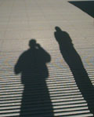
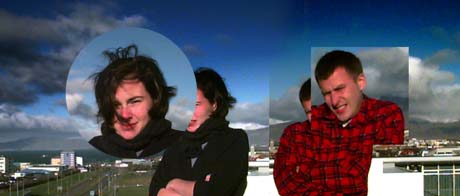

Our trip to the Gottfólk roof

Okay, so we've been hanging around work too much. Doesn't mean we don't find
time to get out and enjoy Iceland's beautiful outdoors. We'd been carefully
planning this trip for a week, but nothing could prepare us for the numbing
cold that awaited. We had time for a couple of snapshots before our speech
started to slur.

|